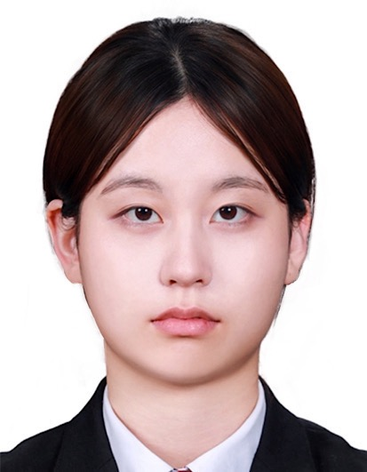

생성형 AI와 스마트시티
생성형 AI가 미래 도시와 일상에 미칠 영향을 조사하며, 기술의 접근성과 사회적 활용 가능성을 탐구했습니다.

Generative AI · NLP Portfolio
서울대학교 첨단융합학부
복잡한 기술을 누구나 쉽게 활용할 수 있도록 만드는 생성형 AI와 언어 기반 시스템에 관심이 있습니다. NLP, 파인튜닝, 책임 있는 AI를 바탕으로 사람과 기술 사이의 거리를 줄이는 방법을 탐구합니다.
생성형 AI가 미래 도시와 일상에 미칠 영향을 조사하며, 기술의 접근성과 사회적 활용 가능성을 탐구했습니다.
학생의 학습 성향을 바탕으로 맞춤형 전략을 제안하는 웹앱을 기획·개발하고 GitHub를 통해 배포했습니다.
인공신경망 학습 과정과 임베딩을 살펴보고, Word2Vec·텍스트 생성·뉴스 분류 예제를 통해 언어 모델의 기초를 탐구했습니다.
교내 행사, 교무실 위치, 급식 식단 등 학교 정보를 활용해 챗봇 파인튜닝을 시도하며 언어 모델의 현장 활용을 고민했습니다.
인공지능 기초 팀 프로젝트에서 데이터 기반 예측 문제를 다루며 AI 응용의 가능성을 탐색했습니다.
고차원 데이터의 구조와 다양체 가설을 바탕으로, 임베딩·차원 축소·어텐션 메커니즘을 수학적으로 탐구했습니다.
생성형 AI가 편향을 강화하거나 재생산할 수 있는 방식을 통계적 관점에서 분석하고 공정한 AI의 필요성을 살폈습니다.
음성인식·감정 분석·언어 모델을 활용해 기술 접근성을 높이고 디지털 격차를 줄이는 포용적 AI를 구상했습니다.
생성형 AI와의 대화가 확증편향으로 이어질 수 있는 과정을 조사하고, 설문을 통해 사용자의 정보 수용 방식을 살폈습니다.
AI가 다수의 선호를 반영하는 방식과 사용자의 사고 다양성 문제를 연결해, 비판적 AI 활용의 조건을 탐구했습니다.
협업이나 대화가 필요하다면 편하게 연락해 주세요.